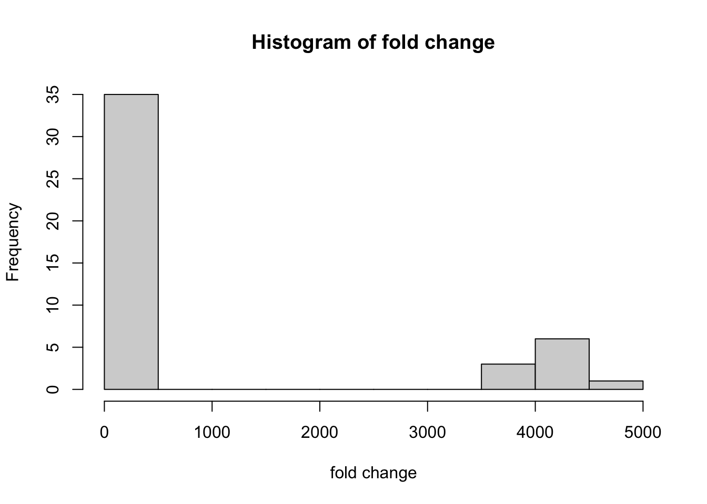
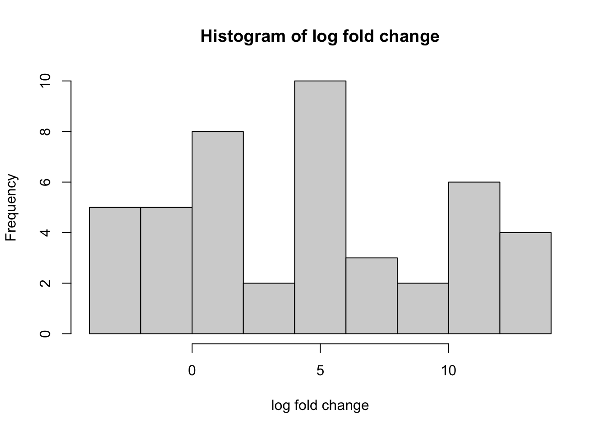
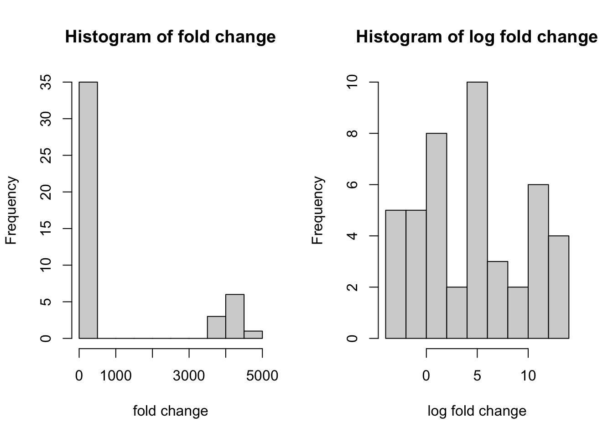
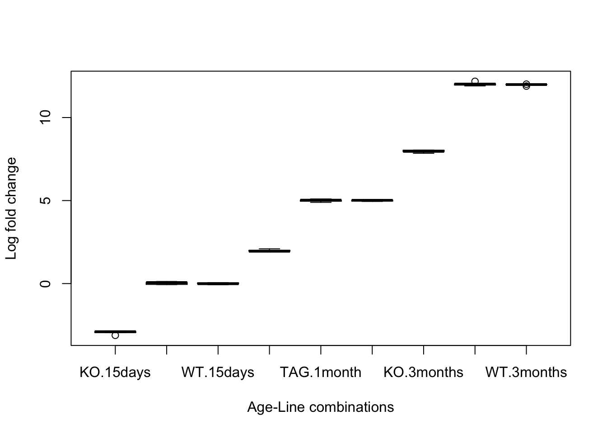
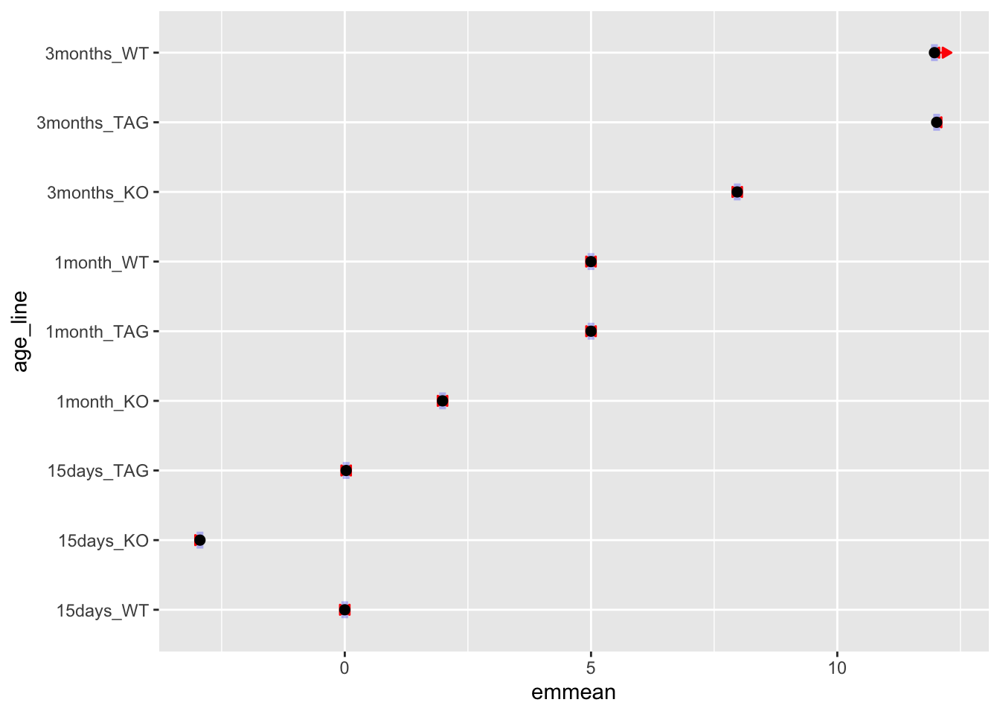

Chapter 3 Making/Simulating the simple data set (only for exon1 (B1) and one housekeeping gene)
So, we are using primer pair geneB1_2 for the RT-qPCR of geneB1 transcripts.
Let’s call the libraries required and make a simplistic data set to understand how the simulated Ct values are created.
What is Ct value? Ans: the PCR cycle in which the amplification signal (because of fluorophore) of a gene/transcript reach a detectable amount. It depends on initial (or starting) amount (or concentration) of a particular gene/transcript. So, the more the starting concentration, earlier it get detected. So, highly abundant gene/transcript will have smaller Ct value compared to other transcripts. For example, let’s take two known transcripts: transcript A, and transcript B and their starting concentrations were 100µL and 80µL, respectively. Transcript A will have smaller Ct value compared to transcript B.
library(purrr)
library(tibble)
set.seed(10)
df <- data.frame(replicate(n = 3, rnorm(5, 12, .1), simplify = TRUE)) The code above is an example code making the data set with Ct values for 3 replicates (runs) of the same samples for an exon. We are having total 5 samples here. data.frame() function makes the array of values into a data frame. I hope you understand how the code is working. Now, let’s do a real simulation.
3.1 Samples of different age
We will have samples of three age groups, namely 15 days, 1 month and 3 months. In each age group, there will be three genotypes/lines, namely knock-out (KO), tagged (TAG), and wild-type (WT). So, let’s add 5 samples per age group.
3.1.1 For age 15 days
nKO <- 5 #No. of KO sample
nTAG <- 5 # No. of TAG sample
nWT <- 5 # No. of WT sample
set.seed(11)
geneB1 <- rbind(replicate(n = 3, rnorm(nKO, 25, .1), simplify = TRUE),
replicate(n = 3, rnorm(nTAG, 22, .08), simplify = TRUE),
replicate(n = 3, rnorm(nWT, 22, .08), simplify = TRUE)) Have a look at geneB1 data set. The data set has 3 Ct values in 3 columns for the same sample.
Now, let’s make another data set for the housekeeping gene.
Hk <- rbind(replicate(n = 3, rnorm(nKO, 25, .1), simplify = TRUE),
replicate(n = 3, rnorm(nTAG, 25, .1), simplify = TRUE),
replicate(n = 3, rnorm(nWT, 25, .1), simplify = TRUE)) #making the dataset with Ct values
day15 <- data.frame(geneB1, Hk)
colnames(day15) <- c(paste0("geneB1_run", seq(1:3)), paste0("Hk_run", seq(1:3))) #naming the columns. 3 runs
day15$sampleID <- c(paste0("KO", seq(1, nKO)),
paste0("TAG", seq(1, nTAG)),
paste0("WT", seq(1, nWT))) #naming sample/ID
day15 <- day15[, c(7, 1:6)] #reordering
day15$age <- rep("15days", times = nrow(day15)) #adding age to all. nrow means how many sample
day15$line <- c(rep("KO", times = nKO), rep("TAG", times = nTAG), rep("WT", times = nWT))3.1.2 For age 1 month
geneB1_1 <- rbind(replicate(n = 3, rnorm(nKO, 20, .1), simplify = TRUE),
replicate(n = 3, rnorm(nTAG, 17, .07), simplify = TRUE),
replicate(n = 3, rnorm(nWT, 17, .07), simplify = TRUE))
Hk1 <- rbind(replicate(n = 3, rnorm(nKO, 25, .1), simplify = TRUE),
replicate(n = 3, rnorm(nTAG, 25, .1), simplify = TRUE),
replicate(n = 3, rnorm(nWT, 25, .1), simplify = TRUE))
month1 <- data.frame(geneB1_1, Hk1)
#data.frame function makes the array of values into a data frame
colnames(month1) <- c(paste0("geneB1_run", seq(1:3)), paste0("Hk_run", seq(1:3)))
month1$sampleID <- c(paste0("KO", seq(nKO+1, 2*nKO)),
paste0("TAG", seq(nTAG+1, 2*nTAG)),
paste0("WT", seq(nWT+1, 2*nWT)))
month1 <- month1[, c(7, 1:6)]
month1$age <- rep("1month", times = nrow(month1))
month1$line <- c(rep("KO", times = nKO), rep("TAG", times = nTAG), rep("WT", times = nWT))3.1.3 For age 3 months
geneB1_2 <- rbind(replicate(n = 3, rnorm(5, 14, .1), simplify = TRUE),
replicate(n = 3, rnorm(5, 10, .07), simplify = TRUE),
replicate(n = 3, rnorm(5, 10, .07), simplify = TRUE))
Hk2 <- rbind(replicate(n = 3, rnorm(5, 25, .1), simplify = TRUE),
replicate(n = 3, rnorm(5, 25, .1), simplify = TRUE),
replicate(n = 3, rnorm(5, 25, .1), simplify = TRUE))
month3 <- data.frame(geneB1_2, Hk2)
colnames(month3) <- c(paste0("geneB1_run", seq(1:3)), paste0("Hk_run", seq(1:3)))
month3$sampleID <- c(paste0("KO", seq(2*nKO+1, 3*nKO)),
paste0("TAG", seq(2*nTAG+1, 3*nTAG)),
paste0("WT", seq(2*nWT+1, 3*nWT)))
month3 <- month3[, c(7, 1:6)]
month3$age <- rep("3months", times = nrow(month3)) #adding age to all. nrow means how many sample
month3$line <- c(rep("KO", times = nKO), rep("TAG", times = nTAG), rep("WT", times = nWT))3.2 Data preparation
Now, let’s select the numeric columns with Ct values only and find out the mean value for geneB1 and HK from the three runs/replicates per sample.
a <- pcr %>% select_if(is.numeric) %>% colnames()
pcr$Ct_geneB1 <- apply(pcr[, c(grep("geneB1_", a, ignore.case = TRUE, value = T))], 1, mean)
pcr$Ct_Hk <- apply(pcr[, c(grep("Hk_", a, ignore.case = TRUE, value = T))], 1, mean)Let’s organize the data set. Also, we don’t need the raw Ct values from the three runs any more.
data <- pcr[, c("sampleID", "age", "line", "Ct_geneB1", "Ct_Hk")]Let’s apply the formula of ΔCt: delta_Ct = Ct (gene of interest) – Ct (housekeeping gene)
data$delta_Ct <- data$Ct_geneB1 - data$Ct_Hk Let’s calculate the calibrator’s mean ΔCt value. Geometric mean is better if calibrators’ ΔCt values are variable. Geometric mean is resistant to outlier. Our Ct values are not so variable. So, we can do arithmetic mean.
calibrator will be the samples relative to which we want to know the expression level. We want to know the fold-change (fold gene expression level) compared to 15-days-old wild-type samples (calibraators) here. We have to keep in mind this thing for our downstream analysis.
calibrator <- data[data$line == "WT" & data$age == "15days",]
calibrator_deltaCt <- mean(calibrator$delta_Ct)Now, we have to subtract the calibrator ΔCt value from each sample to find out ΔΔCt value
data$delta_deltaCt <- data$delta_Ct - calibrator_deltaCtLet’s find out fold change. The formula for this is: \(2^{-ΔΔCt}\)
data$fold_gene_expression <- 2^-(data$delta_deltaCt)So here, we can see that 15-days-old WT samples have fold change of ~1. Because their Ct values were our calibrator/reference Ct values. Compared to them, 15-days-old TAG samples also have fold change of ~1, which is very reasonable, because we had similar values for the TAG as well. 15-days-old KO samples have less expression (~0.13 fold only). But in 1-month-old group, KO samples have fold change of ~4 and TAG/WT samples have fold-change of ~32. So, much higher than the reference group. Also, in 3-month-old group, KO samples have fold change of ~250 and WT/TAG samples have fold change of >4020. So, same pattern (i.e. less in KO and high in WT/TAG) is observed for every
line. Andagehas an effect in the expression of the gene.
Interpreting the fold change Have a close look at your fold change column for each line and age group.
To do any statistical analysis, we have to check how the fold change values are distributed. If they are not normally distributed, it is better to log transform them.
par(mfrow = c(1,1))
hist(data$fold_gene_expression, xlab="fold change", main="Histogram of fold change")
data$log_fold_change <- log2(data$fold_gene_expression)
par(mfrow = c(1,1))
hist(data$log_fold_change, xlab="log fold change", main="Histogram of log fold change") We can put the same plots together and compare the fold change before and after log transformation.
par(mfrow = c(1,2))
hist(data$fold_gene_expression, xlab="fold change", main="Histogram of fold change")
hist(data$log_fold_change, xlab="log fold change", main="Histogram of log fold change")
Our data preparation for one gene of interest and one housekeeping gene is done.
Hurray……!
Let’s save the data set. The code below will save the data set in your working directory. You can change the name as you wish by replacing pcr1.csv to the name you want.
write.csv(data, "pcr1.csv", sep = ",")## Warning in write.csv(data, "pcr1.csv", sep = ","):
## attempt to set 'sep' ignored3.3 Statistical analysis
Let’s have a look at the experiment design.
table(data$age, data$line)##
## KO TAG WT
## 15days 5 5 5
## 1month 5 5 5
## 3months 5 5 5So, it was a balanced design.
Let’s have a look at the log fold change for each age and line combination.
boxplot(log_fold_change ~ line*age, data=data, xlab = "Age-Line combinations", ylab = "Log fold change") The plot shows that WT and TAG in a particular age group have similar expression of transcript B1.
Let’s make a column combining age and line together.
data$age_line <- paste(data$age, data$line, sep = "_")Let’s apply linear model for fold change against age_line column.
lm1 <- lm(log_fold_change ~ age_line, data=data)
summary(lm1)##
## Call:
## lm(formula = log_fold_change ~ age_line, data = data)
##
## Residuals:
## Min 1Q Median 3Q Max
## -0.17576 -0.04204 0.01335 0.04109 0.16291
##
## Coefficients:
## Estimate Std. Error t value Pr(>|t|)
## (Intercept) -2.93946 0.03387 -86.79 <2e-16
## age_line15days_TAG 2.96739 0.04790 61.95 <2e-16
## age_line15days_WT 2.93946 0.04790 61.37 <2e-16
## age_line1month_KO 4.92432 0.04790 102.81 <2e-16
## age_line1month_TAG 7.93940 0.04790 165.75 <2e-16
## age_line1month_WT 7.93852 0.04790 165.73 <2e-16
## age_line3months_KO 10.90785 0.04790 227.72 <2e-16
## age_line3months_TAG 14.95705 0.04790 312.26 <2e-16
## age_line3months_WT 14.91203 0.04790 311.32 <2e-16
##
## (Intercept) ***
## age_line15days_TAG ***
## age_line15days_WT ***
## age_line1month_KO ***
## age_line1month_TAG ***
## age_line1month_WT ***
## age_line3months_KO ***
## age_line3months_TAG ***
## age_line3months_WT ***
## ---
## Signif. codes:
## 0 '***' 0.001 '**' 0.01 '*' 0.05 '.' 0.1 ' ' 1
##
## Residual standard error: 0.07574 on 36 degrees of freedom
## Multiple R-squared: 0.9998, Adjusted R-squared: 0.9998
## F-statistic: 2.471e+04 on 8 and 36 DF, p-value: < 2.2e-16Interpreting the output:
R takes the first group as reference by default. So, the comparison is against 15days_KO, that’s why it is not shown in the comparison. It is actually shown in terms of intercept. The value of intercept is an estimate of 15days_KO (You can have a look at the average of 15days_KO), which is significant here in this analysis. Here, every group is significantly different than the 15days_KO group. Have a closer look at your fold change or log fold change columns. Also notice the adjusted R-squared value and overall p-value in the output. Almost 100% variability in the data is captured by our model. It is because we simulated the data this way, there wasn’t that much variability.
Tips:
t value = Estimate/std. Error. The t value measures the size of the difference relative to the variation in the sample data (look at the equation). The greater the magnitude of t value, the greater the evidence against the null hypothesis meaning there is greater evidence that there is a significant difference. t value closer to 0 means more likely there isn’t a significant difference.
N.B. you can check the estimate, standard error and t value manually for the reference (15days_KO) group.
estimate <- mean(data$log_fold_change[data$age_line == "15days_KO"])
se <- function(x) sqrt(var(x) / length(x))
SE <- se(data$log_fold_change[data$age_line == "15days_KO"]) #`SE` might be a bit different than the value shown in the output table
t_value <- estimate/SEBut we set 15days_WT as our calibrator/reference group while calculating the ΔCt value. So, let’s set 15days_WT group as our reference. We should relevel the age_line column as factor as well for modeling.
data$age_line <- relevel(factor(data$age_line), ref = "15days_WT")
lm2 <- lm(log_fold_change ~ age_line, data=data)
summary(lm2)##
## Call:
## lm(formula = log_fold_change ~ age_line, data = data)
##
## Residuals:
## Min 1Q Median 3Q Max
## -0.17576 -0.04204 0.01335 0.04109 0.16291
##
## Coefficients:
## Estimate Std. Error t value
## (Intercept) -1.324e-15 3.387e-02 0.000
## age_line15days_KO -2.939e+00 4.790e-02 -61.367
## age_line15days_TAG 2.793e-02 4.790e-02 0.583
## age_line1month_KO 1.985e+00 4.790e-02 41.438
## age_line1month_TAG 5.000e+00 4.790e-02 104.384
## age_line1month_WT 4.999e+00 4.790e-02 104.365
## age_line3months_KO 7.968e+00 4.790e-02 166.356
## age_line3months_TAG 1.202e+01 4.790e-02 250.891
## age_line3months_WT 1.197e+01 4.790e-02 249.951
## Pr(>|t|)
## (Intercept) 1.000
## age_line15days_KO <2e-16 ***
## age_line15days_TAG 0.563
## age_line1month_KO <2e-16 ***
## age_line1month_TAG <2e-16 ***
## age_line1month_WT <2e-16 ***
## age_line3months_KO <2e-16 ***
## age_line3months_TAG <2e-16 ***
## age_line3months_WT <2e-16 ***
## ---
## Signif. codes:
## 0 '***' 0.001 '**' 0.01 '*' 0.05 '.' 0.1 ' ' 1
##
## Residual standard error: 0.07574 on 36 degrees of freedom
## Multiple R-squared: 0.9998, Adjusted R-squared: 0.9998
## F-statistic: 2.471e+04 on 8 and 36 DF, p-value: < 2.2e-16Interpreting the output
This time, the comparison is relative to 15days_WT, (and not shown in the comparison). Here every group is significantly different than the 15days_WT group except 15days_TAG. And you might have recall why this is the case–we simulated this way, all the WT and TAG samples have basically similar Ct values (or fold change or log fold change). See the boxplot as well. Have a closer look at the values for WT and TAG in the output columns to verify the claim. Also notice the adjusted R-squared value and overall p-value again.
We can check pair-wise comparisons. It will show all possible combination of pair-wise comparisons.
library(emmeans)
em=emmeans(lm2,~age_line)
emp=emmeans(lm2,pairwise~age_line)
em## age_line emmean SE df lower.CL upper.CL
## 15days_WT 0.0000 0.0339 36 -0.0687 0.0687
## 15days_KO -2.9395 0.0339 36 -3.0082 -2.8708
## 15days_TAG 0.0279 0.0339 36 -0.0408 0.0966
## 1month_KO 1.9849 0.0339 36 1.9162 2.0536
## 1month_TAG 4.9999 0.0339 36 4.9313 5.0686
## 1month_WT 4.9991 0.0339 36 4.9304 5.0678
## 3months_KO 7.9684 0.0339 36 7.8997 8.0371
## 3months_TAG 12.0176 0.0339 36 11.9489 12.0863
## 3months_WT 11.9726 0.0339 36 11.9039 12.0413
##
## Confidence level used: 0.95emp## $emmeans
## age_line emmean SE df lower.CL upper.CL
## 15days_WT 0.0000 0.0339 36 -0.0687 0.0687
## 15days_KO -2.9395 0.0339 36 -3.0082 -2.8708
## 15days_TAG 0.0279 0.0339 36 -0.0408 0.0966
## 1month_KO 1.9849 0.0339 36 1.9162 2.0536
## 1month_TAG 4.9999 0.0339 36 4.9313 5.0686
## 1month_WT 4.9991 0.0339 36 4.9304 5.0678
## 3months_KO 7.9684 0.0339 36 7.8997 8.0371
## 3months_TAG 12.0176 0.0339 36 11.9489 12.0863
## 3months_WT 11.9726 0.0339 36 11.9039 12.0413
##
## Confidence level used: 0.95
##
## $contrasts
## contrast estimate SE df t.ratio
## 15days_WT - 15days_KO 2.94e+00 0.0479 36 61.367
## 15days_WT - 15days_TAG -2.79e-02 0.0479 36 -0.583
## 15days_WT - 1month_KO -1.98e+00 0.0479 36 -41.438
## 15days_WT - 1month_TAG -5.00e+00 0.0479 36 -104.384
## 15days_WT - 1month_WT -5.00e+00 0.0479 36 -104.365
## 15days_WT - 3months_KO -7.97e+00 0.0479 36 -166.356
## 15days_WT - 3months_TAG -1.20e+01 0.0479 36 -250.891
## 15days_WT - 3months_WT -1.20e+01 0.0479 36 -249.951
## 15days_KO - 15days_TAG -2.97e+00 0.0479 36 -61.950
## 15days_KO - 1month_KO -4.92e+00 0.0479 36 -102.805
## 15days_KO - 1month_TAG -7.94e+00 0.0479 36 -165.751
## 15days_KO - 1month_WT -7.94e+00 0.0479 36 -165.732
## 15days_KO - 3months_KO -1.09e+01 0.0479 36 -227.723
## 15days_KO - 3months_TAG -1.50e+01 0.0479 36 -312.258
## 15days_KO - 3months_WT -1.49e+01 0.0479 36 -311.318
## 15days_TAG - 1month_KO -1.96e+00 0.0479 36 -40.855
## 15days_TAG - 1month_TAG -4.97e+00 0.0479 36 -103.801
## 15days_TAG - 1month_WT -4.97e+00 0.0479 36 -103.782
## 15days_TAG - 3months_KO -7.94e+00 0.0479 36 -165.773
## 15days_TAG - 3months_TAG -1.20e+01 0.0479 36 -250.308
## 15days_TAG - 3months_WT -1.19e+01 0.0479 36 -249.368
## 1month_KO - 1month_TAG -3.02e+00 0.0479 36 -62.946
## 1month_KO - 1month_WT -3.01e+00 0.0479 36 -62.927
## 1month_KO - 3months_KO -5.98e+00 0.0479 36 -124.918
## 1month_KO - 3months_TAG -1.00e+01 0.0479 36 -209.453
## 1month_KO - 3months_WT -9.99e+00 0.0479 36 -208.513
## 1month_TAG - 1month_WT 8.83e-04 0.0479 36 0.018
## 1month_TAG - 3months_KO -2.97e+00 0.0479 36 -61.972
## 1month_TAG - 3months_TAG -7.02e+00 0.0479 36 -146.507
## 1month_TAG - 3months_WT -6.97e+00 0.0479 36 -145.568
## 1month_WT - 3months_KO -2.97e+00 0.0479 36 -61.991
## 1month_WT - 3months_TAG -7.02e+00 0.0479 36 -146.526
## 1month_WT - 3months_WT -6.97e+00 0.0479 36 -145.586
## 3months_KO - 3months_TAG -4.05e+00 0.0479 36 -84.535
## 3months_KO - 3months_WT -4.00e+00 0.0479 36 -83.595
## 3months_TAG - 3months_WT 4.50e-02 0.0479 36 0.940
## p.value
## <.0001
## 0.9996
## <.0001
## <.0001
## <.0001
## <.0001
## <.0001
## <.0001
## <.0001
## <.0001
## <.0001
## <.0001
## <.0001
## <.0001
## <.0001
## <.0001
## <.0001
## <.0001
## <.0001
## <.0001
## <.0001
## <.0001
## <.0001
## <.0001
## <.0001
## <.0001
## 1.0000
## <.0001
## <.0001
## <.0001
## <.0001
## <.0001
## <.0001
## <.0001
## <.0001
## 0.9888
##
## P value adjustment: tukey method for comparing a family of 9 estimatesplot(em, comparisons = TRUE) Have a look at every combination of WT and TAG with age? How are they? Aren’t they same as we expected?
What if we model for age and line separately?
lm3 <- lm(log_fold_change ~ age + line, data=data)
summary(lm3)##
## Call:
## lm(formula = log_fold_change ~ age + line, data = data)
##
## Residuals:
## Min 1Q Median 3Q Max
## -0.58563 -0.14537 -0.05045 0.23178 0.40482
##
## Coefficients:
## Estimate Std. Error t value Pr(>|t|)
## (Intercept) -3.19157 0.08549 -37.33 <2e-16 ***
## age1month 4.96513 0.09365 53.02 <2e-16 ***
## age3months 11.62336 0.09365 124.11 <2e-16 ***
## lineTAG 3.34389 0.09365 35.71 <2e-16 ***
## lineWT 3.31928 0.09365 35.44 <2e-16 ***
## ---
## Signif. codes:
## 0 '***' 0.001 '**' 0.01 '*' 0.05 '.' 0.1 ' ' 1
##
## Residual standard error: 0.2565 on 40 degrees of freedom
## Multiple R-squared: 0.9977, Adjusted R-squared: 0.9974
## F-statistic: 4300 on 4 and 40 DF, p-value: < 2.2e-16It shows everything very well. But we didn’t wanted the comparison/interpretation in this way.
What if we model for interaction of age and line?
lm4 <- lm(log_fold_change ~ age*line, data=data)
summary(lm4)##
## Call:
## lm(formula = log_fold_change ~ age * line, data = data)
##
## Residuals:
## Min 1Q Median 3Q Max
## -0.17576 -0.04204 0.01335 0.04109 0.16291
##
## Coefficients:
## Estimate Std. Error t value Pr(>|t|)
## (Intercept) -2.93946 0.03387 -86.786 <2e-16
## age1month 4.92432 0.04790 102.805 <2e-16
## age3months 10.90785 0.04790 227.723 <2e-16
## lineTAG 2.96739 0.04790 61.950 <2e-16
## lineWT 2.93946 0.04790 61.367 <2e-16
## age1month:lineTAG 0.04769 0.06774 0.704 0.486
## age3months:lineTAG 1.08181 0.06774 15.970 <2e-16
## age1month:lineWT 0.07474 0.06774 1.103 0.277
## age3months:lineWT 1.06472 0.06774 15.718 <2e-16
##
## (Intercept) ***
## age1month ***
## age3months ***
## lineTAG ***
## lineWT ***
## age1month:lineTAG
## age3months:lineTAG ***
## age1month:lineWT
## age3months:lineWT ***
## ---
## Signif. codes:
## 0 '***' 0.001 '**' 0.01 '*' 0.05 '.' 0.1 ' ' 1
##
## Residual standard error: 0.07574 on 36 degrees of freedom
## Multiple R-squared: 0.9998, Adjusted R-squared: 0.9998
## F-statistic: 2.471e+04 on 8 and 36 DF, p-value: < 2.2e-1614days old and KO are not shown again. Because R took them as reference, by default. Our lm2 is better to compare everything.
The above code is equivalent to lm(log_fold_change ~ age + line + age*line, data=data). We used the short convention here.
The intercept here is the mean of 15-days-old KO mice samples. Check it by mean(data$log_fold_change[data$age == "15days" & data$line == "KO"]). All other results are relative to this group (not shown in the output). You can try lm(log_fold_change ~ -1 + age*line, data=data) command as well to see what happens.
How is our model? Let’s check.
anova(lm2)## Analysis of Variance Table
##
## Response: log_fold_change
## Df Sum Sq Mean Sq F value Pr(>F)
## age_line 8 1133.86 141.732 24710 < 2.2e-16 ***
## Residuals 36 0.21 0.006
## ---
## Signif. codes:
## 0 '***' 0.001 '**' 0.01 '*' 0.05 '.' 0.1 ' ' 1We could use lme4 or limma packages for the modeling as well. But lm() function of base R is good enough to do this simple modeling. We will see their use later. Next part of this endeavour will be simulation and analysis of RT-qPCR data with multiple gene of interest/transcripts and multiple reference/housekeeping gene. Stay tuned!